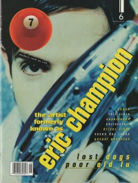

CMnexus
: Contemporary Christian culture, music, and media.
|
7ballMay / Jun 1996, #6
| Cover |
|---|
|  | | Writers in this Issue |
|---|
Bonham, Chad
Caviness, Brad
Chimento, Frank
Christopher, Scott W.
Holmes, Billy
MacIntosh, Dan
Meier, Val
Neely, Don
Parker, Mike
Roth, J. Peter
Roth, Steve
Well, Chris
|
Cover Feature:
- "M E T A M O R P H O S I S" by Frank Chimento
Article:
- Poor Old Lu by Dan MacIntosh
- "The Dogs' Way" by J. Peter Roth
- "Johnny Q. Public Hits The Big Time"
- "How The Doves Work" by Chris Well
Bankshots:Album Review:blah, blah, blah videos, visual art in Christian music by J. Peter Roth
|
|